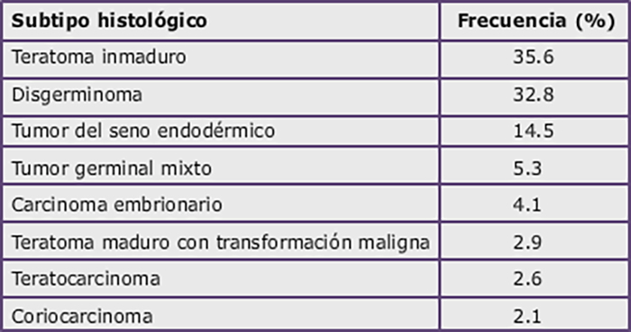

Cáncer de Ovario

3.13 Características y Tratamiento de Tumores Ováricos Infrecuentes
Tumores de malignidad intermedia (Borderline)
Representan entre el 4% y el 14% de las neoplasias ováricas, diferenciándose de los tumores malignos por la ausencia de invasión del estroma. La media de edad de aparición son 40 años. La mayoría corresponden al subtipo histológico seroso y suelen diagnosticarse en estadio I. El subtipo mucinoso se asocia en ocasiones a un tumor mucinoso apendicular y a un pseudomixoma peritonei (presencia de material gelatinoso extracelular en la cavidad pélvica y abdominal).
La supervivencia es claramente superior a la de los tumores malignos, sobre todo para los tumores serosos, que se asocian a una SG del 98% a 5 años cuando no existen implantes invasivos. Cuando se identifican estos implantes o existe un componente histológico micropapilar tienen un comportamiento más agraesivo y la SG disminuye a un 70% a los 5 años. En caso de tumores mucinosos asociados a un pseudomixoma peritonei la SG es sólo de un 50%.
En pacientes con aparentes estadios II, III y IV se recomienda una estadificiación quirúrgica y citorreducción de la misma manera que en el carcinoma invasivo. En el subtipo mucinoso habría que realizar también apendicectomía. Sin embargo, en pacientes con tumores unilaterales en aparente estadio I se considera que la estadificación con salpingo-ooforectomía unilateral, omentectomía, lavado peritoneal y biopsias peritoneales podría ser suficiente, sobre todo si se trata de mujeres jóvenes con deseo de descendencia.
En líneas generales no se recomienda tratamiento complementario con quimioterapia. Tan solo tendría que considerarse en estadios avanzados y ante la presencia de implantes invasivos, aunque no se han realizado estudios prospectivos.
Tumores germinales
Los tumores germinales del ovario representan entre un 20% y un 25% de todos los tumores del ovario, pero sólo un 5% de las neoplasias malignas, ya que la gran mayoría son benignos. Los malignos suelen diagnosticarse en mujeres jóvenes, con un pico de incidencia en torno a los 20 años, y, a diferencia del carcinoma, son curables en la mayoría de los casos. Al menos un 90% de pacientes con neoplasias germinales en estadios precoces y entre un 70% y un 85% en estadios más avanzados serán largas supervivientes.
El tumor germinal más frecuente es el teratoma maduro o quiste dermoide, que es benigno. Los tumores germinales malignos se dividen en diferentes tipos histológicos, aunque también pueden presentarse mixtos, con componentes de varios de ellos. Los más frecuentes son el teratoma inmaduro y el disgerminoma (histología equivalente al seminoma en el varón), que entre ambos representan cerca de un 70% de los casos (siguiente tabla).
Tumores germinales del ovario por orden de frecuencia (según base de datos de EEUU. Smith et al. Obstet Gynecol 2006)
Estos tumores habitualmente generan masas de gran tamaño pero, a diferencia de los epiteliales, suelen diagnosticarse confinados a un ovario (estadio I), aunque el disgerminoma puede ser bilateral hasta en un 15% de los casos. La ascitis está presente sólo en el 20% de los casos, pero tienen una mayor tendencia a ocasionar metástasis por vía hematógena (a hígado y/o pulmón). La sintomatología más frecuente es el dolor abdominal asociado a una masa palpable. En ocasiones también pueden manifestarse con fiebre, distensión abdominal o sangrado vaginal. Los marcadores tumorales β-HCG (fracción beta de la gonadotropina coriónica humana) y α-FP (alfa-fetoproteina) pueden resultar muy útiles en el diagnóstico. Los disgerminomas por definición no elevan la α-FP, pudiendo o no ocasionar discretas elevaciones de la β-HCG, pero casi siempre elevan la LDH (lactodeshidrogenasa). Los coriocarcinomas elevan la β-HCG, mientras que los tumores del seno endodérmico y algunos teratomas inmaduros y poliembriomas se asocian a una elevación de la α-FP. Los carcinomas embrionarios pueden elevar ambos marcadores.
Se debe realizar una estadificación quirúrgica de igual modo que en los tumores epiteliales (empleándose también la misma clasificación de la FIGO descrita en la Tabla 3), con especial atención a los ganglios paraaórticos y pélvicos, que resultan afectados con mayor frecuencia que en los carcinomas. Es importante resaltar que en la mayoría de los casos se puede realizar una preservación de la fertilidad, conservando un ovario y el útero. Incluso cuando se trata de un disgerminoma, que se asocia más frecuentemente a una afectación contralateral, la ooforectomía bilateral no suele ser necesaria ya que habitualmente la quimioterapia postoperatoria será curativa. Esto es algo se suma importancia y hay que tenerlo muy presente debido a la edad joven de diagnóstico.
El esquema de quimioterapia recomendado en la actualidad es el BEP (cisplatino 20 mg/m2 días 1-5, etopósido 100 mg/m2 días 1-5 y bleomicina 30 U días 2, 9 y 16), el mismo que en los tumores germinales testiculares. De todas formas, en un estudio realizado por el GOG en 42 mujeres con disgerminomas en estadios IB-III con resección completa se obtuvieron unos resultados excelentes con el esquema carboplatino (400 mg/m2 día 1) y etopósido (120 mg/m2 días 1-3), sin observarse ninguna recaída con una mediana de 8 años de seguimiento, y con una toxicidad significativamente menor que el esquema BEP. Las recomendaciones de tratamiento quimioterápico en los tumores germinales se resumen en la siguiente tabla.
Importante: Los tumores germinales del ovario, al igual que los testiculares, son extremadamente quimiosensibles. Son de los pocos tumores sólidos que pueden llegar a curarse con quimioterapia aunque se encuentren diseminados en el diagnóstico.
Indicaciones de quimioterapia en tumores germinales del ovario:
Tumores del estroma gonadal
Constituyen un grupo heterogéneo de tumores poco frecuentes (5% de las neoplasias ováricas) que se desarrollan a partir de las células que rodean a los ovocitos, que no son epiteliales ni germinales, y que presentan áreas celulares de diferenciación gonadal (células de la granulosoa, de la teca, de Sertoli o de Leydig). Los tumores del estroma gonadal pueden producir una hipersecreción de hormonas esteroideas (estrógenos o andrógenos), por lo que se debe sospechar el diagnóstico cuando existan signos/síntomas de exceso de estrógenos (precocidad sexual en niñas, metrorragias, trastornos menstruales) o de andrógenos (virilización).
Recientemente se han identificado mutaciones somáticas que juegan un papel muy relevante en el desarrollo de estos tumores. Los tumores de la granulosa se asocian con frecuencia a una mutación en FOXL2, mientras que los de Sertoli-Leydig a una mutación en DICER1. No tienen ninguna asociación con las mutaciones germinales en BRCA.
Los tumores de células del estroma de la granulosa son el subtipo histológico más frecuente, representan el 70% de los tumores del estroma gonadal. Dentro de ellos se encuentran los fibromas y los tecomas, que son benignos, y los tumores de células de la granulosa, que son malignos. Estos últimos tienen un patrón morfológico variable, y, al igual que los tumores germinales, se presentan más frecuentemente afectando a un solo ovario, con un gran tamaño y en estadio I. Existen dos tipos: del adulto, que es el más habitual, y juvenil. Las células de la teca suelen estar presentes en el tumor hasta en un 70% de los casos, y cuando esto ocurre de manera manifiesta suelen ser las responsables de la hipersecreción hormonal (principalmente inhibina o estradiol). Los tumores de células de la granulosa se asocian a hiperplasia endometrial en más de la mitad de los casos, y, ocasionalmente a un adenocarcinoma de endometrio. El pronóstico es incierto, ya que, aunque las pacientes con estadios I se asocian a una SG a 5 años del 90%-95%, a los 10 años disminuye al 82% y a los 20 años al 62%, debido a la tendencia a producirse recaídas tardías, habiéndose descrito recaídas hasta 40 años después del diagnóstico. El pronóstico lógicamente empeora en estadios más avanzados.
Los tumores de las células de Sertoli-Leydig o androblastomas representan menos del 0.5% de los tumores ováricos, y se caracterizan por la presencia de estructuras testiculares que producen andrógenos y pueden causar virilización (aunque no todos son funcionalmente activos). El pronóstico es más favorable que los tumores de células de la granulosa, con un 20% de recaídas, que ocurrirán habitualmente dentro de los 5 primeros años. El resto de subtipos histológicos son realmente excepcionales.
La estadificación y el tratamiento quirúrgico de los tumores del estroma gonadal es el similar al de los tumores epiteliales, aceptándose la conservación de un ovario y el útero en mujeres con estadios IA-IC que tengan deseos de descendencia. En este caso, la necesidad de una linfadenectomía paraaórtica es controvertida.
Los tumores en estadio I con bajo riesgo no precisan tratamiento adyuvante. Los tumores en estadio I de alto riesgo (IC o IA-IB con G3) se aceptan tres posibilidades: seguimiento sin tratamiento adyuvante, quimioterapia con un esquema basado en platino. Los tumores con estadios más avanzados (II-IV) se tratarán con alguna de las dos últimas opciones. No existe un esquema de quimioterapia claramente definido para estos tumores, aceptándose los esquemas utilizados en tumores germinales, el esquema de los epiteliales (carboplatino-paclitaxel) o el régimen cisplatino-adriamicina-etopósido.
En la recaída existen datos que indican un posible beneficio de la cirugía de rescate. Como tratamiento sistémico clásicamente se ha recomendado la quimioterapia (con esquemas basados en platino), aunque actualmente existe cierta evidencia (estudios no randomizados) de que la hormonoterapia (con tamoxifeno o inhibidores de la aromatasa) o bevacizumab pueden tener una eficacia interesante.